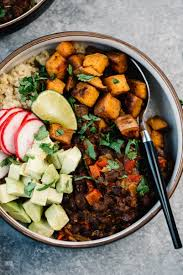

Meal Prep Mastery
Simplify your nutrition journey
Why Meal Prep?
Meal prepping saves time, reduces stress, and helps you maintain a balanced diet. It's the key to consistent, healthy eating in our busy lives.
Learn MoreQuick Tips for Effective Meal Prep
Plan Your Meals
Dedicate time each week to plan your meals. This helps with grocery shopping and reduces food waste.
Invest in Quality Containers
Good containers keep food fresh longer and make it easier to portion and transport your meals.
Prep Ingredients in Advance
Wash, chop, and portion ingredients ahead of time to speed up cooking during the week.
Cook in Batches
Prepare larger quantities of staple foods like grains, proteins, and roasted vegetables for easy mix-and-match meals.
Featured Recipes

Quinoa Black Bean Bowl
A nutritious vegetarian option filled with protein and fiber.
View RecipeStart Your Meal Prep Journey
Join our community and get weekly meal prep tips and recipes.
Sign Up Now